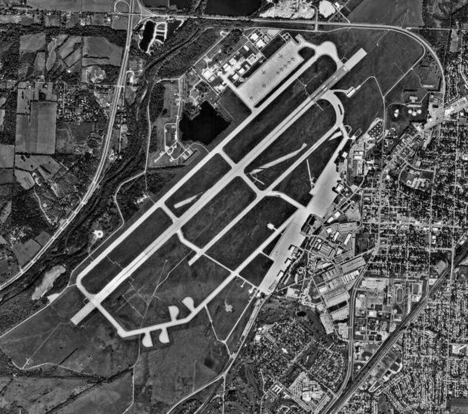

Wright-Patterson AFB
Ohio

Headquarters of Project Blue Book from 1952 to 1969. Legend holds that Roswell debris was brought to its Hangar 18. 1,2
Open in the interactive Watcher
Related
- William Neil McCasland Person
- Nathan Twining Person
- J. Allen Hynek Person
Sources
- Unidentified Flying Objects – Project Blue Book U.S. National Archives
- Hangar 18 (Wright-Patterson Air Force Base) Wikipedia